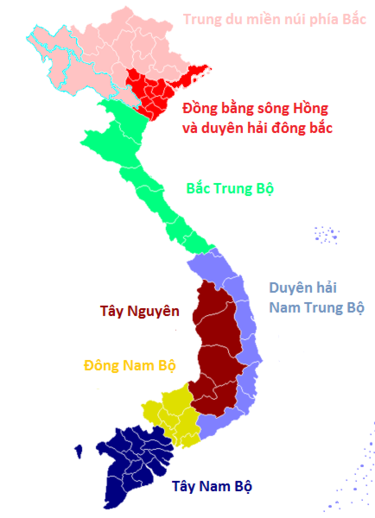
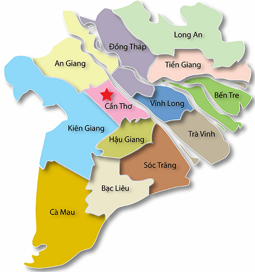

Vùng đồng bằng sông Cửu Long của Việt Nam
Vùng đồng bằng sông Cửu Long của Việt Nam, còn gọi là Vùng đồng bằng Nam Bộ hoặc theo cách gọi của người dân miền Nam Việt Nam ngắn gọn là Miền Tây.
Có 12 tỉnh và 1 thành phố:
- An Giang
- Bến Tre
- Bạc Liêu
- Cà Mau
- Thành phố Cần Thơ
- Đồng Tháp
- Hậu Giang
- Kien Giang
- Lâm Đồng
- Sóc Trăng
- Tiền Giang
- Trà Vinh
- Vĩnh Long
Đồng bằng sông Cửu Long có tổng diện tích 40.577,6 km² và có tổng dân số là 17.744.947 người (2022).

Vị trí vùng Đồng bằng sông Cửu Long trên bản đồ Việt Nam

Bản đồ vùng động bằng sông Cửu Long